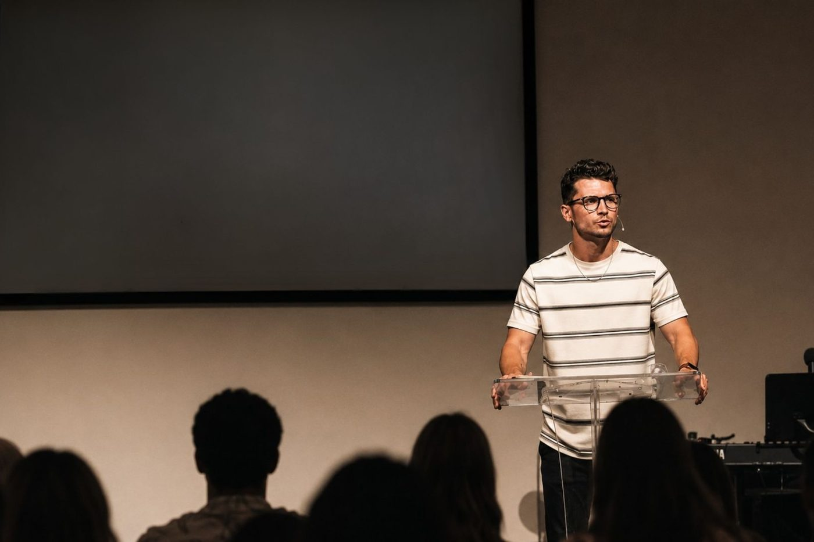

Watch Online
Messages to pause, reflect, and praise with.
Catch this week’s message or dig back into a past series — all in one place.

Catch this week’s message or dig back into a past series — all in one place.

New messages are added automatically from our YouTube channel once a day.
Watch on YouTubeEvery synced message, organized by series. Choose a series to explore it, or browse the full archive.
Loading sermon series…
Loading messages…
No messages in this series yet — check back soon, or .